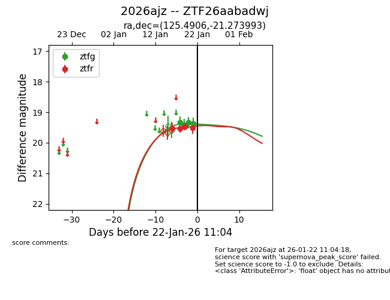
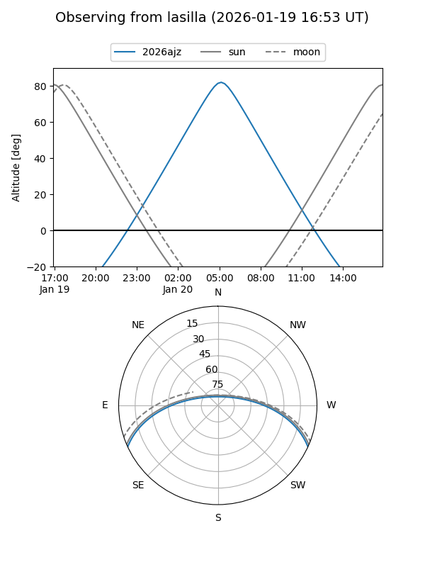
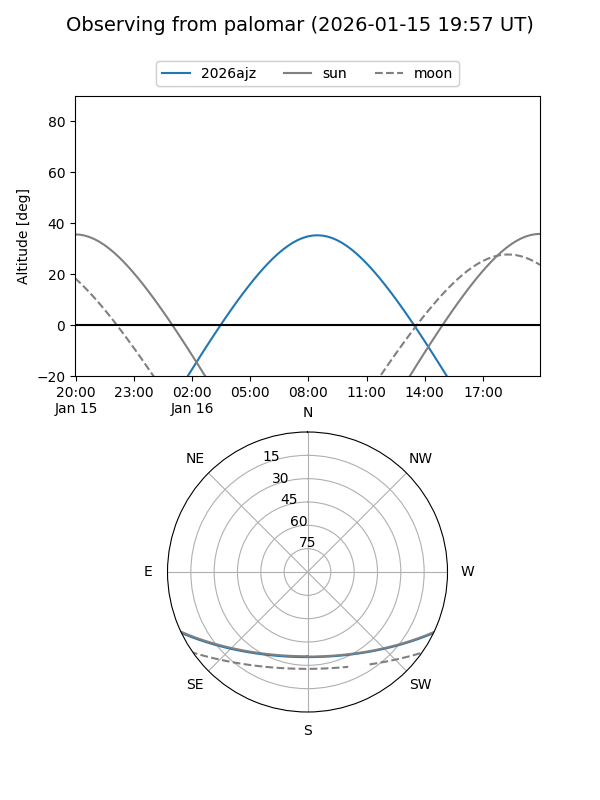
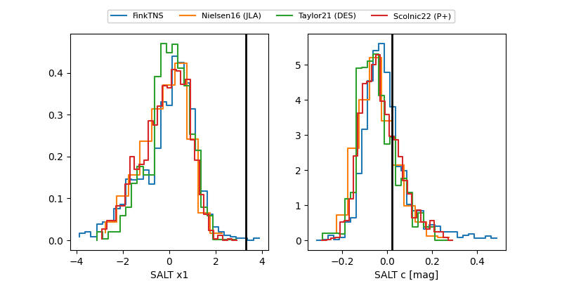

2026ajz
Target 2026ajz at 2026-01-18 08:35
Aliases and brokers:
FINK: link
Lasair: link
ALeRCE: link
TNS: link
YSE: link
alt names
ZTF26aabadwj (ztf,fink_ztf)
2026ajz (tns,yse)
Coordinates:
equatorial (ra, dec) = 125.4906,-21.27399
equatorial (HMS+DMS) = 08:21:57.75,-21:16:26.37
galactic (l, b) = (242.4215,+8.84050)
Flags:
Photometry:
last ztfr=19.53
2 ztfr detections
Lightcurve

Visibility


Additional plots
